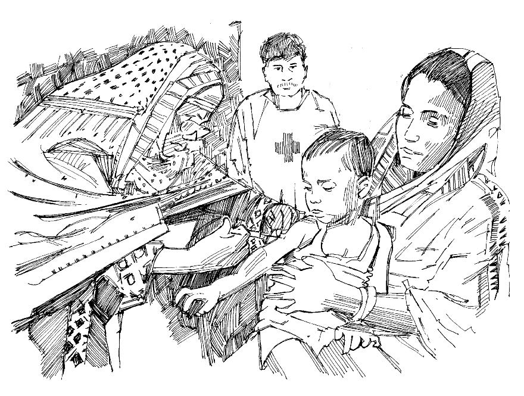

Overview
- A mass vaccination campaign occurs when the authorities give vaccinations to as many (appropriate) people as possible in a short period.
- Mass vaccinations take place in addition to routine vaccinations (see Action tool 24). They may be organized because routine vaccinations cannot be given or in order to help control an epidemic.
- Mass vaccinations are even more important in some kinds of epidemic because they help to protect vulnerable children.
Volunteers
Normally, volunteers do not administer vaccines directly to children, but you can help in many other ways.
- The most important task is social mobilization (see Action Tool 43).
- Coordinate with the health authorities.
- Use the National Society’s network to publicize mass vaccination campaigns. Help logistically to organize them.
How to help with vaccinations
- Make sure you have all the relevant information and know where and when the vaccination campaign is taking place and who is supposed to be vaccinated.
- Find out the reasons for vaccination and the basic facts about the disease that vaccination will prevent.
- Familiarize yourself with the habits and beliefs of members of your community and how they normally deal with vaccinations.
- Meet community leaders and tell them about the campaign; get them to help reach the community.
- Talk to members of the community and explain how important vaccination is to protect their children.
- If some members of the community are afraid of vaccinations, assist community workers to calm and remove their fears. Correct rumours and misinformation about vaccinations.
- Help health workers to ensure that all individuals at risk gets vaccinated, including in hard to reach areas.
- Use simple and straightforward messages.
- Use information, education and communication materials, such as the Community message tools in this toolkit, because pictures always help people to understand messages better.

Mass vaccination campaign